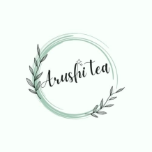
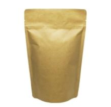
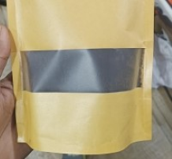

Hello I'm Arupjyoti Nath
"Starting a Tea Business on a Student Budget" Being a student hasn't stopped me from diving into the world of tea! I've started selling tea packets using the pocket money my parents give me. It's been a journey of passion and resourcefulness. Each packet I sell isn't just tea—it's a little piece of my dedication to making things happen. It shows that even with a small budget, I can create something special. This venture teaches me that you don't need a lot of money to start something exciting and meaningful. It's proof that determination and a little pocket change can go a long way.
Product Details
  This is ArushiTea, an online platform that offers affordable and quality tea products at your door steps.